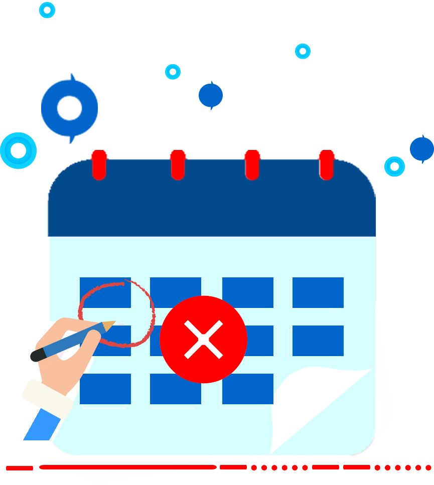

<ion-header>
  <ion-toolbar color="primary" style="height:48px">
    <ion-buttons slot="start" *ngIf="showMenu">
      <ion-menu-button></ion-menu-button>
    </ion-buttons>
    <ion-icon slot="start" class="commonHeaderMyBackArrow" *ngIf="!showMenu" (click)="goBack()" name="chevron-back"></ion-icon>
    <ion-title>{{'ALERT_TEXT.MY_ATTENDANCE_LOGS' | translate}}</ion-title>
    <ion-buttons slot="end">
      <ion-label *ngIf="startDate" style="font-size: 14px;
      background: white;
      color: var(--ion-color-primary);
      padding: 5px;
      border-radius: 12px;">{{startDate | date : 'dd MMM yyyy'}}</ion-label>
      <ion-button *ngIf="startDateMain" slot="icon-only" color="btnthm" (click)="showCalender(picker)" style="font-size: larger;">
        <ion-datetime [pickerOptions]="pickerOptions" #picker style="display: none;" pickerFormat="YYYY-MM-DD" displayFormat="YYYY-MM-DD"
            [(ngModel)]="startDateMain"  (ionChange)="changeCalendar($event)"></ion-datetime>
        <ion-icon name="calendar-outline" style="position:relative;" style="color: #FFF;">
        </ion-icon>
      <ion-ripple-effect></ion-ripple-effect></ion-button>
    </ion-buttons>
  </ion-toolbar>
</ion-header>

<ion-content>
  <ion-refresher (ionRefresh)="doRefresh($event)" slot="fixed">
    <ion-refresher-content></ion-refresher-content>
  </ion-refresher>
  <ion-list has-bouncing="false" overflow-scroll="false" class="list-style">

    <ion-card lines="none" class="ion-no-padding card-style" *ngFor="let item of myAttendanceLogsListClone">
      <ion-row lines="none" no-padding full-width>
        <ion-col size="3" class="col apt-left" no-padding>
          <ion-row style="height: 100%;">
          <ion-item lines="none" style="    --padding-start: 0px;    --inner-padding-end: 0px;
          width: 100%;background: var(--ion-color-primary);">
            <div style="text-align: center; width: 100%;">
              <ion-label color="light" style="font-weight: 600;    width: -webkit-fill-available;
              text-align: center;font-size: 15px;    padding: 3px;">{{item.DateTime | date :'dd'}} {{getDayofDate(item.DateTime)}}</ion-label>
              <h3 class="text-white div-left-middle-text">{{item.DateTime | date : 'MMM' | uppercase}} -
                {{item.DateTime | date : 'yyyy'}}</h3>
            </div>
          </ion-item>
          </ion-row>
        </ion-col>
        <ion-col size="5" style="padding: 0px;">
          <ion-item lines="none" class="div-apt-center" (click)="openMap(item)">
            <ion-icon slot="start" name="location-outline" color="primary" class="apt-text-icons" *ngIf="item.DeviceCode === 'MA'"></ion-icon>
            <ion-label class="apt-center-title">{{item.DeviceName}}</ion-label>
          </ion-item>
        </ion-col>

        <ion-col size="4" class="apt-right" no-padding>
          <div style="display: flex;justify-content: space-evenly; width: -webkit-fill-available;">
            <h3 class="text-white div-left-bottom-text">{{item.DateTime | date:'h:mm a'}}</h3>
            <ion-icon [ngClass]="{'clockin-icon' :item.accessType === 10, 'clockout-icon': item.accessType !== 10}" [name]="item.accessType === 10? 'arrow-forward-outline': 'arrow-back-outline'"></ion-icon>
          </div>
        </ion-col>
      </ion-row>
    </ion-card>


</ion-list>

<ion-row *ngIf="myAttendanceLogsListClone.length === 0 && loadingFinished" style="height: 100%; width: 100%; display: flex; justify-content: center; align-items: center;">
  <ion-col size="12" size-sm size-md>
          
          <div style="display: grid;text-align: center;">
            <ion-label class="empty_title">{{'EMPTY.NO_ATTENDANCE_LOGS_TITLE' | translate}}</ion-label>
            <div class="empty_line">________</div>
            <ion-text class="empty_desc">{{'EMPTY.NO_ATTENDANCE_LOGS' | translate}}</ion-text>
          </div>
  </ion-col>
</ion-row>

<ion-infinite-scroll threshold="100px" (ionInfinite)="loadData($event)">
  <ion-infinite-scroll-content loadingSpinner="bubbles"
    loadingText="{{ 'COMMON.LOADER_MSG.LOADING_MORE_DATA' | translate }}">
  </ion-infinite-scroll-content>
</ion-infinite-scroll>

</ion-content>
<ion-footer style="background: #ffffff">
  <ion-toolbar transparent lines="none">
    <ion-row>
      <ion-col style="text-align: center;">
        <div style="align-items: center;
        display: inline-flex;">
          <ion-icon class="clockin-icon1" name="arrow-forward-outline"></ion-icon>
          <ion-label class="point">Clock-in</ion-label>
        </div>
      </ion-col>
      <ion-col style="text-align: center;">
        <div style="align-items: center;
        display: inline-flex;">
          <ion-icon class="clockout-icon1" name="arrow-back-outline"></ion-icon>
          <ion-label class="point">Clock-out</ion-label>
        </div>
      </ion-col>
    </ion-row>
  </ion-toolbar>
</ion-footer>
